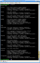
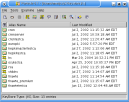

Portecle is a user friendly GUI application for creating, managing and examining key stores, keys, certificates, certificate requests, certificate revocation lists and more.
Currently, Portecle can be used to, for example:
Take the tour. Read the HOWTOs.
|  |  |
| keytool | Portecle |
For downloads, contact information and mailing lists, issue tracking and other development facilities, see the SourceForge.net project page.
Most of the cryptographic functionality of this program is implemented using the Bouncy Castle Crypto APIs.
The help facility was adapted from work by Dave Seaton.
Portecle makes use of three open source Java Look & Feels:
To launch web browsers and mail clients from within Portecle BrowserLauncher by Eric Albert is used.
The project hosting is provided by
SourceForge.net.
This software is available under the terms laid out in the GNU General Public License. This makes it free for you to use and to modify if you so wish. As per the terms and conditions of the aforementioned license this program is supplied with no warranty.
{kind=link}
{kind=link}